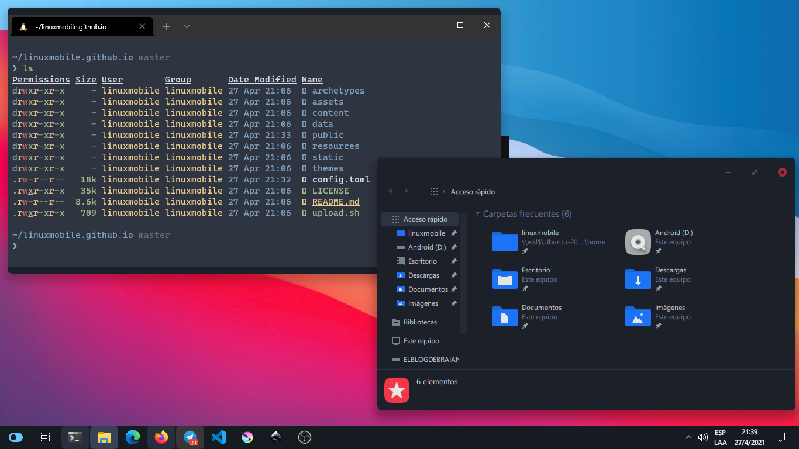
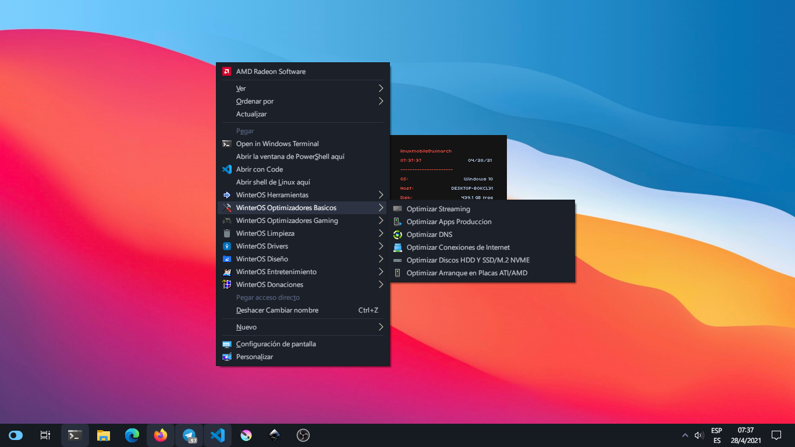
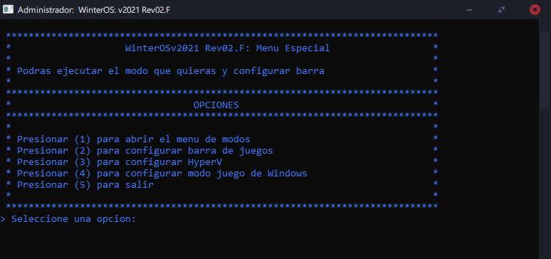
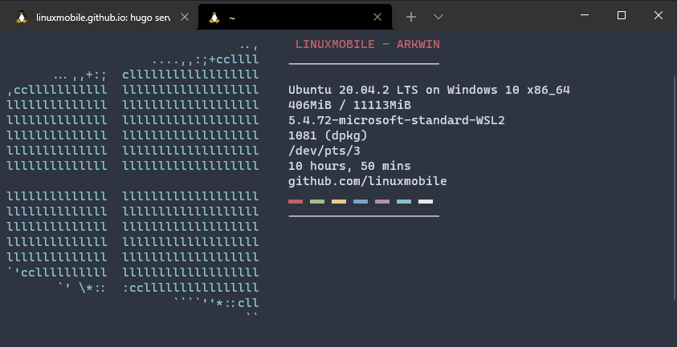

Cómo tengo configurado Windows, qué versión estoy usando, cómo configuré la terminal para utilizar WSL2.
Hacía muchísimo tiempo que no utilizaba Windows como mi Sistema Operativo Personal. Lo he usado, obviamente para poder cumplir con algunas necesidades. Pero no mucho más que eso.
Al dedicarme a compilar roms y trabajar bastante con el desarrollo de Android me es necesario trabajar con Linux. Sin embargo, he logrado suplir esa necesidad utilizando WSL2, junto con Windows Terminal y VSCode. A continuación voy a dejar algunos pasos de cómo tengo configurado todo y mis recomendaciones.

Qué versión de Windows?
Esta es una de las deciciones más dificiles. Probé Windows 10 Insider Preview [Build 21364], y está muy buena pero viene plagada de bloatware. Sin embargo más adelante voy a tirar una solución que siempre utilizo.
Así que me quedaban dos opciones (dentro de lo que había elegido) MiniOS (de Doofy Project) y WinterOS (de Marcos Cerqueiro)
En resumen, MiniOS es una modificación de Windows 10, con lo escencial. No hay versiones LTSC y versiones completas 20H1. Cuenta con menú extendido que tiene un par de características “útiles”.
WinterOS es parecido. Cuenta con una versión LTSC y una 20H1.
- Está muy bien optimizado.
- Hay muchísima información en sus videos de Youtube donde explica qué modificó, qué quitó y qué agregó. Lo cual es muy difícil de saber con respecto a MiniOS.
- El menú extendido tiene muchisimas herramientas útiles.
- Tiene una guía de qué hace cada sección y opción del menú.

Así que como podrán notar, decidí utilizar la versión de Marcos Cerqueiro (WinterOS).
Cómo lo he configurado?
Para la configuración hay una guía que el mismo autor deja en sus links (por lo tanto no voy a publicar acá dos veces lo mismo.) Sin embargo, voy a dar mis tips o lo que yo he modificado.
WinterOS Herramientas
Tengo deshabilitado todo. Windows Update, Windows Defender, Firewall, eliminado OneDrive por completo, y desactivado los servicios de impresión, Bluetooth y más.
WinterOS Optimizadores Básicos
Streaming. En esta opción solo configuré OBS-Studio. Ya que es mi principal herramienta para Streaming.Producción. Krita, Inkscape y Gimp.Conexiones de Internet. Acá seleciono las tres opciones.Discos HDD y SDD/M.2 NVME. Bueno, tengo los tres tipos de disco. Un disco HDD de 1tb, un SDD de 1tb y el NVME (donde tengo el SO) de 500gb.
WinterOS Optimizadores “Gaming”
Optimizador de MODOS.

En la opción de modos, tengo configurado en GOLD. Y he deshabilitado las otras opciones (Barra de juegos, HyperV, modo de juego de Windows)
Optiizador de CPU
Deshabilitando Servicios Innecesarios
Esta parte no es sumamente necesaria, pero la verdad que funciona muy bien.
Yo utilizo esta herramienta creada por EverythingTech. Dejo el link de Descarga Directa. Por favor, vean bien el video, sean precavidos y sigan la guía.
Mi Tema de Windows 10
Con mi tema de Windows, no me refiero a que sea mío, más bien a el que yo decidí utilizar.
 Descargalo desde aquí y sigue la guía del .zip
Descargalo desde aquí y sigue la guía del .zip
Windows Terminal y VSCode

Daniell's dotfiles

La configuración es muy sencilla, voy a dejar el link de Github para que puedan descargar estos Dotfiles. Y configurarlo como yo lo hice.
La verdad, podría haber hecho un Rice desde cero, y dejarlo todo como me gustaría, pero esta configuración me pareció muy útil.